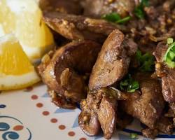
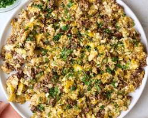
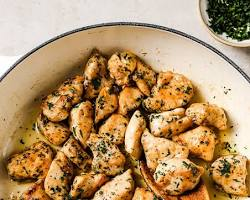
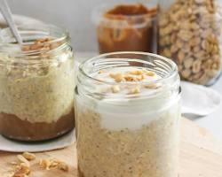

Chicken Liver
Ingredients:
500g chicken liver, 1 sliced onion, 2 tbsp olive oil, 2 tbsp lemon juice (or vinegar), garlic, salt, pepper, and cumin or coriander.

Chickpea & Tuna Salad
Ingredients:
1 can of tuna (drained), 1 to 2 cups boiled or canned chickpeas, diced cucumber, diced tomato, red onion, lemon juice, olive oil, salt, and pepper.

Tuna Egg Omelette
Ingredients:
2 to 3 eggs, 1 can of tuna (drained), a pinch of salt and pepper, and 1 tsp of oil or butter for the pan. Add onions or parsley if you have them.
Spiced Red Lentils
Ingredients:
1/2 cup red lentils, chopped onion, garlic, 1 tbsp tomato paste, spices (cumin, paprika, turmeric), water, and a bit of oil or butter.

Beef & Eggs Skillet
Ingredients:
200g to 450g ground beef, 4 to 6 eggs, 1 chopped onion, garlic, 1 tbsp olive oil, salt, and black pepper.

Butter Chicken Breast Bites
Ingredients:
300g to 400g boneless chicken breast, 5 cloves of garlic, 1 to 2 tbsp butter, 1 tsp oil, lemon juice, oregano or parsley, salt, and pepper.

Peanut Butter Oats
Ingredients:
1/2 cup rolled oats, milk or water, 1 tbsp peanut butter, 2 to 3 heaping tablespoons of plain Fromage Blanc (or yogurt), and honey or a banana for sweetness.

Bean & Egg Shakshuka
Ingredients:
1 cup boiled or canned white beans, 4 eggs, 1 tin of peeled tomatoes (or 3 fresh grated tomatoes), chopped onion, crushed garlic, paprika, and olive oil.